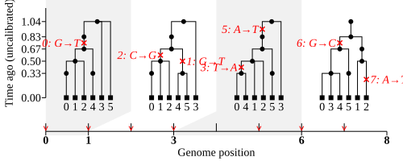
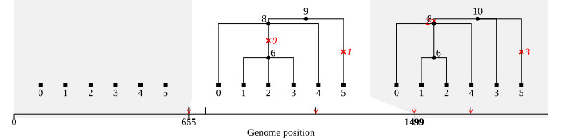
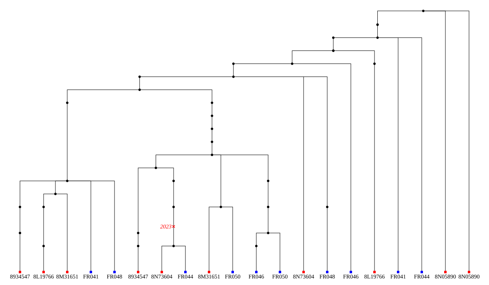

Usage#
Toy example#
Tsinfer takes as input a Zarr file, with phased variant data encoded in the VCF Zarr (.vcz) format. The standard route to create such a file is by conversion from a VCF file, e.g. using vcf2zarr as described later in this document. However, for the moment we’ll just use a pre-generated dataset:
import zarr
ds = zarr.open("_static/example_data.vcz")
This is what the genotypes stored in that datafile look like:
Site: 0 1 2 3 4 5 6 7
Diploid sample 0 (genome 0): T G G A C T C A
Diploid sample 0 (genome 1): T G G T C T G A
Diploid sample 1 (genome 0): T G G T C T G T
Diploid sample 1 (genome 1): G G C T C A C A
Diploid sample 2 (genome 0): T T C A C T C A
Diploid sample 2 (genome 1): G T C T C T C A
VariantData and ancestral alleles#
We wish to infer a genealogy that could have given rise to this data set. To run tsinfer
we wrap the .vcz file in a tsinfer.VariantData object. This requires an
ancestral state to be specified for each site; there are
many methods for calculating these: details are outside the scope of this manual, but we
have started a discussion topic
on this issue to provide some recommendations.
Sometimes VCF files will contain the
ancestral state in the “AA” (“ancestral allele”) info field, in which case it will be encoded
in the variant_AA field of the .vcz file. It’s also possible to provide a numpy array
of ancestral alleles, of the same length as the number of variants. Ancestral
alleles that are not in the list of alleles for their respective site are treated as unknown
and not used for inference (with a warning given).
import tsinfer
# For this example take the REF allele (index 0) as ancestral
ancestral_state = ds['variant_allele'][:,0].astype(str)
# This is just a numpy array, set the last site to an unknown value, for demo purposes
ancestral_state[-1] = "."
vdata = tsinfer.VariantData("_static/example_data.vcz", ancestral_state)
/home/runner/work/tskit-site/tskit-site/tsinfer/formats.py:2480: UserWarning: An ancestral allele was not found in the variant_allele array for the 1 sites (12.50%) listed below. They will be treated as of unknown ancestral state:
'.': 1 (12.50% of sites)
warnings.warn(
The VariantData object is a lightweight wrapper around the .vcz file.
We’ll use it to infer a tree sequence on the basis of the sites that vary between the
different samples. However, note that certain sites are not used by tsinfer for inferring
the genealogy (although they are still encoded in the final tree sequence), These are:
Non-variable (fixed) sites, e.g. site 4 above
Singleton sites, where only one genome has the derived allele e.g. site 5 above
Sites where the ancestral allele is unknown, e.g. demonstrated by site 7 above
Multialleleic sites, with more than 2 alleles (but see here for a workaround)
Additionally, during the inference step, additional sites can be flagged as not for use in
inference, for example if they are deemed unreliable (this is done
via the exclude_positions parameter).
Sites which are not used for inference will
still be included in the final tree sequence, with mutations at those sites being placed
onto branches by parsimony.
Masks#
It is also possible to completely exclude sites and samples, by specifing a boolean
site_mask and/or a sample_mask when creating the VariantData object. Sites or samples with
a mask value of True will be completely omitted both from inference and the final tree sequence.
This can be useful, for example, if your VCF file contains multiple chromosomes (in which case
tsinfer will need to be run separately on each chromosome) or if you wish to select only a subset
of the chromosome for inference (e.g. to reduce computational load). If a site_mask is provided,
note that the ancestral alleles array only specifies alleles for the unmasked sites.
Below, for instance, is an example of including only sites up to position six in the contig
labelled “chr1” in the example_data.vcz file:
import numpy as np
# mask out any sites not associated with the contig named "chr1"
# (for demonstration: all sites in this .vcz file are from "chr1" anyway)
chr1_index = np.where(ds.contig_id[:] == "chr1")[0]
site_mask = ds.variant_contig[:] != chr1_index
# also mask out any sites with a position >= 6
site_mask[ds.variant_position[:] >= 6] = True
smaller_vdata = tsinfer.VariantData(
"_static/example_data.vcz",
ancestral_state=ancestral_state[site_mask == False],
site_mask=site_mask,
)
print(f"The `smaller_vdata` object returns data for only {smaller_vdata.num_sites} sites")
The `smaller_vdata` object returns data for only 6 sites
Topology inference#
Once we have stored our data in a .VariantData object, we can easily infer
a tree sequence using the Python
API. Note that each sample in the original .vcz file will correspond to an individual
in the resulting tree sequence. Since these three individuals are diploid, the resulting
tree sequence will have ts.num_samples == 6 (i.e. unlike in a .vcz file, a “sample” in
tskit refers to a haploid genome, not a diploid individual).
inferred_ts = tsinfer.infer(vdata)
print(f"Inferred a genetic genealogy for {inferred_ts.num_samples} (haploid) genomes")
/opt/hostedtoolcache/Python/3.10.15/x64/lib/python3.10/site-packages/numpy/core/getlimits.py:549: UserWarning: The value of the smallest subnormal for <class 'numpy.float64'> type is zero.
setattr(self, word, getattr(machar, word).flat[0])
/opt/hostedtoolcache/Python/3.10.15/x64/lib/python3.10/site-packages/numpy/core/getlimits.py:89: UserWarning: The value of the smallest subnormal for <class 'numpy.float64'> type is zero.
return self._float_to_str(self.smallest_subnormal)
/opt/hostedtoolcache/Python/3.10.15/x64/lib/python3.10/site-packages/numpy/core/getlimits.py:549: UserWarning: The value of the smallest subnormal for <class 'numpy.float32'> type is zero.
setattr(self, word, getattr(machar, word).flat[0])
/opt/hostedtoolcache/Python/3.10.15/x64/lib/python3.10/site-packages/numpy/core/getlimits.py:89: UserWarning: The value of the smallest subnormal for <class 'numpy.float32'> type is zero.
return self._float_to_str(self.smallest_subnormal)
Inferred a genetic genealogy for 6 (haploid) genomes
And that’s it: we now have a fully functional tskit.TreeSequence
object that we can interrogate in the usual ways. For example, we can look
at the aligned haplotypes in the tree sequence:
print("Sample\tInferred sequence")
for sample_id, seq in zip(
inferred_ts.samples(),
inferred_ts.alignments(missing_data_character="."),
):
print(sample_id, seq, sep="\t")
Sample Inferred sequence
0 TGGACTCA
1 TGGTCTGA
2 TGGTCTGT
3 GGCTCACA
4 TTCACTCA
5 GTCTCTCA
You will notice that the sample sequences generated by this tree sequence are identical to the input haplotype data: apart from the imputation of missing data, tsinfer is guaranteed to losslessly encode any given input data, regardless of the inferred topology. You can check this programatically if you want:
import numpy as np
for v_orig, v_inferred in zip(vdata.variants(), inferred_ts.variants()):
if any(
np.array(v_orig.alleles)[v_orig.genotypes] !=
np.array(v_inferred.alleles)[v_inferred.genotypes]
):
raise ValueError("Genotypes in original dataset and inferred tree seq not equal")
print("** Genotypes in original dataset and inferred tree sequence are the same **")
** Genotypes in original dataset and inferred tree sequence are the same **
We can examine the inferred genetic genealogy, in the form of local trees. Tsinfer has also placed mutations on the genealogy to explain the observed genetic variation:
mut_labels = {
m.id: "{:g}: {}→{}".format(
s.position,
inferred_ts.mutation(m.parent).derived_state if m.parent >= 0 else s.ancestral_state,
m.derived_state,
)
for s in inferred_ts.sites()
for m in s.mutations
}
node_labels = {u: u for u in inferred_ts.samples()}
inferred_ts.draw_svg(
size=(500, 200), node_labels=node_labels, mutation_labels=mut_labels, y_axis=True)

We have inferred 4 trees aong the genome. Note, however, that there are “polytomies” in the trees, where some nodes have more than two children (e.g. the root node in the first tree). This is a common feature of trees inferred by tsinfer and signals that there was not sufficient information to resolve the tree at this internal node.
Each internal (non-sample) node in this inferred tree represents an ancestral sequence, constructed on the basis of shared, derived alleles at one or more of the sites. By default, the time of each such node is not measured in years or generations, but is simply the frequency of the shared derived allele(s) on which the ancestral sequence is based. For this reason, the time units are described as “uncalibrated” in the plot, and trying to calculate statistics based on branch lengths will raise an error:
inferred_ts.diversity(mode="branch")
---------------------------------------------------------------------------
LibraryError Traceback (most recent call last)
/tmp/ipykernel_2223/2935518142.py in ?()
----> 1 inferred_ts.diversity(mode="branch")
/opt/hostedtoolcache/Python/3.10.15/x64/lib/python3.10/site-packages/tskit/trees.py in ?(self, sample_sets, windows, mode, span_normalise)
7991 window (defaults to True).
7992 :return: A numpy array whose length is equal to the number of sample sets.
7993 If there is one sample set and windows=None, a numpy scalar is returned.
7994 """
-> 7995 return self.__one_way_sample_set_stat(
7996 self._ll_tree_sequence.diversity,
7997 sample_sets,
7998 windows=windows,
/opt/hostedtoolcache/Python/3.10.15/x64/lib/python3.10/site-packages/tskit/trees.py in ?(self, ll_method, sample_sets, windows, mode, span_normalise, polarised)
7698 if np.any(sample_set_sizes == 0):
7699 raise ValueError("Sample sets must contain at least one element")
7700
7701 flattened = util.safe_np_int_cast(np.hstack(sample_sets), np.int32)
-> 7702 stat = self.__run_windowed_stat(
7703 windows,
7704 ll_method,
7705 sample_set_sizes,
/opt/hostedtoolcache/Python/3.10.15/x64/lib/python3.10/site-packages/tskit/trees.py in ?(self, windows, method, *args, **kwargs)
7661 def __run_windowed_stat(self, windows, method, *args, **kwargs):
7662 strip_dim = windows is None
7663 windows = self.parse_windows(windows)
-> 7664 stat = method(*args, **kwargs, windows=windows)
7665 if strip_dim:
7666 stat = stat[0]
7667 return stat
LibraryError: Statistics using branch lengths cannot be calculated when time_units is 'uncalibrated'. (TSK_ERR_TIME_UNCALIBRATED)
To add meaningful dates to an inferred tree sequence, allowing meaningful branch length statistics to be calulated, you must use additional software such as tsdate: the tsinfer algorithm is only intended to infer the genetic relationships between the samples (i.e. the topology of the tree sequence).
Simulation example#
The previous example showed how we can infer a tree sequence using the Python API for a trivial toy example. However, for real data we will not prepare our data and infer the tree sequence all in one go; rather, we will usually split the process into at least two distinct steps.
The first step in any inference is to prepare your data and create the .vcz file. For simplicity here we’ll use Python to simulate some data under the coalescent with recombination, using msprime:
import builtins
import sys
import os
import subprocess
from Bio import bgzf
import numpy as np
import msprime
import tsinfer
if getattr(builtins, "__IPYTHON__", False): # if running IPython: e.g. in a notebook
num_diploids, seq_len = 100, 10_000
name = "notebook-simulation"
python = sys.executable
else: # Take parameters from the command-line
num_diploids, seq_len = int(sys.argv[1]), float(sys.argv[2])
name = "cli-simulation"
python = "python"
ts = msprime.sim_ancestry(
num_diploids,
population_size=10**4,
recombination_rate=1e-8,
sequence_length=seq_len,
random_seed=6,
)
ts = msprime.sim_mutations(ts, rate=1e-8, random_seed=7)
ts.dump(name + "-source.trees")
print(
f"Simulated {ts.num_samples} samples over {seq_len/1e6} Mb:",
f"{ts.num_trees} trees and {ts.num_sites} sites"
)
# Convert to a zarr file: this should be easier once a tskit2zarr utility is made, see
# https://github.com/sgkit-dev/bio2zarr/issues/232
np.save(f"{name}-AA.npy", [s.ancestral_state for s in ts.sites()])
vcf_name = f"{name}.vcf.gz"
with bgzf.open(vcf_name, "wt") as f:
ts.write_vcf(f)
subprocess.run(["tabix", vcf_name])
ret = subprocess.run(
[python, "-m", "bio2zarr", "vcf2zarr", "convert", "--force", vcf_name, f"{name}.vcz"],
stderr = subprocess.DEVNULL if name == "notebook-simulation" else None,
)
assert os.path.exists(f"{name}.vcz")
if ret.returncode == 0:
print(f"Converted to {name}.vcz")
Simulated 200 samples over 0.01 Mb: 20 trees and 20 sites
Converted to notebook-simulation.vcz
Here we first run a simulation then we create a vcf file and convert it to .vcz format.
If we store this code in a file named simulate-data.py, we can run it on the
command line, providing parameters to generate much bigger datasets:
% python simulate-data.py 5000 10_000_000
Simulated 10000 samples over 10.0 Mb: 36204 trees and 38988 sites
Scan: 100%|████████████████████████████████████████████████████████████████████| 1.00/1.00 [00:00<00:00, 2.86files/s]
Explode: 100%|████████████████████████████████████████████████████████████████████| 39.0k/39.0k [01:17<00:00, 501vars/s]
Encode: 100%|███████████████████████████████████████████████████████████████████████| 976M/976M [00:12<00:00, 78.0MB/s]
Finalise: 100%|█████████████████████████████████████████████████████████████████████| 10.0/10.0 [00:00<00:00, 421array/s]
Here, we simulated a sample of 10 thousand chromosomes, each 10Mb long, under human-like parameters. That has created 39K segregating sites. The output above shows the state of the vcf-to-zarr conversion at the end of this process, indicating that it took about a minute to convert the data into .vcz format (this only needs doing once)
Examining the files on the command line, we then see the following::
$ du -sh cli-simulation*
156K cli-simulation-AA.npy
8.8M cli-simulation-source.trees
25M cli-simulation.vcf.gz
8.0K cli-simulation.vcf.gz.tbi
9.4M cli-simulation.vcz
The cli-simulation.vcz zarr data is quite small, about the same size as the
original msprime tree sequence file. Since (like all zarr datastores)
cli-simulation.vcz is a directory
we can peer inside to look where everything is stored:
$ du -sh cli-simulation.vcz/*
8.7M cli-simulation.vcz/call_genotype
88K cli-simulation.vcz/call_genotype_mask
88K cli-simulation.vcz/call_genotype_phased
12K cli-simulation.vcz/contig_id
12K cli-simulation.vcz/contig_length
12K cli-simulation.vcz/filter_id
28K cli-simulation.vcz/sample_id
52K cli-simulation.vcz/variant_allele
24K cli-simulation.vcz/variant_contig
24K cli-simulation.vcz/variant_filter
48K cli-simulation.vcz/variant_id
24K cli-simulation.vcz/variant_id_mask
144K cli-simulation.vcz/variant_position
24K cli-simulation.vcz/variant_quality
Most of this output is not particularly interesting here, but we can see that the
call_genotype array which holds all of the sample genotypes (and thus the vast bulk of the
actual data) only requires about 8.7MB compared to 25MB for the compressed vcf file.
In practice this means we can keep such files lying around without taking up too much space.
Once we have our .vcz file created, running the inference is straightforward.
# Infer & save a ts from the notebook simulation.
ancestral_states = np.load(f"{name}-AA.npy")
vdata = tsinfer.VariantData(f"{name}.vcz", ancestral_states)
tsinfer.infer(vdata, progress_monitor=True, num_threads=4).dump(name + ".trees")
Running the infer command runs the full inference pipeline in one go (the individual steps
are explained here). We provided two extra arguments to infer:
progress_monitor gives us the progress bars show above, and num_threads=4 tells
tsinfer to use four worker threads whenever it can use them.
Performing this inference on the cli-simulation data using Core i5 processor (launched 2009)
with 4GiB of RAM, took about eighteen minutes. The maximum memory usage was about 600MiB.
The output files look like this:
$ ls -lh cli-simulation*
-rw-r--r-- 1 user group 8.2M 14 Oct 13:45 cli-simulation-source.trees
-rw-r--r-- 1 user group 22M 14 Oct 13:45 cli-simulation.samples
-rw-r--r-- 1 user group 8.1M 14 Oct 13:50 cli-simulation.trees
Therefore our output tree sequence file that we have just inferred in a few minutes is
even smaller than the original msprime simulated tree sequence!
Because the output file is also a tskit.TreeSequence, we can use the same API
to work with both. For example, to load up the original and inferred tree sequences
from their corresponding .trees files you can simply use the tskit.load()
function, as shown below.
However, there are thousands of trees in these tree sequences, each of which has
10 thousand samples: much too much to easily visualise. Therefore, in the code below, we
we subset both tree sequences down to their minimal representations for the first six
sample nodes using tskit.TreeSequence.simplify(), while keeping all sites, even if
they do not show genetic variation between the six selected samples.
Note
Using this tiny subset of the overall data allows us to get an informal feel for the trees that are inferred by tsinfer, but this is certainly not a recommended approach for validating the inference!
Once we’ve subsetted the tree sequences down to something that we can comfortably look at, we can plot the trees in particular regions of interest, for example the first 2kb of genome. Below, for simplicity we use the smaller dataset that was simulated and inferred within the the notebook, but exactly the same code will work with the larger version run from the cli simulation.
import tskit
subset = range(0, 6) # show first 6 samples
limit = (0, 2_000) # show only the trees covering the first 2kb
prefix = "notebook" # Or use "cli" for the larger example
source = tskit.load(prefix + "-simulation-source.trees")
source_subset = source.simplify(subset, filter_sites=False)
print(f"True tree seq, simplified to {len(subset)} sampled genomes")
source_subset.draw_svg(size=(800, 200), x_lim=limit, time_scale="rank")
True tree seq, simplified to 6 sampled genomes

inferred = tskit.load(prefix + "-simulation.trees")
inferred_subset = inferred.simplify(subset, filter_sites=False)
print(f"Inferred tree seq, simplified to {len(subset)} sampled genomes")
inferred_subset.draw_svg(size=(800, 200), x_lim=limit)
Inferred tree seq, simplified to 6 sampled genomes

There are a number of things to note when comparing the plots above. Most obviously, the first tree in the inferred tree sequence is empty: by default, tsinfer will not generate a genealogy before the first site in the genome (here, position 655) or past the last site, as there is, by definition, no data in these regions.
You can also see that the inferred tree sequence has fewer trees than the original, simulated one. There are two reasons for this. First, there are some tree changes that do not involve a change of topology (e.g. the first two trees in the original tree sequence are topologically identical, as are two trees after that). Even if we had different mutations on the different edges in these trees, such tree changes are unlikely to be spotted. Second, our inference depends on the mutational information that is present. If no mutations fall on a particular edge in the tree sequence, then we have no way of inferring that this edge existed. The fact that there are no mutations in the first, third, and fifth trees shows that tree changes can occur without associated mutations. As a result, there will be tree transitions that we cannot pick up. In the simulation that we performed, the mutation rate is equal to the recombination rate, and so we expect that many recombinations will be invisible to us.
For similar reasons, there will be many nodes in the tree at which polytomies occur. Here we correctly infer that sample nodes 0 and 4 group together, as do 1 and 2. However, in the middle inferred tree we were not able to distinguish whether node 3 was closer to node 1 or 2, so we have three children of node 7 in that tree.
Finally, you should note that inference does not always get the right answer. At the first site in the inferred trees, node 5 is placed as an outgroup, but at this site it is actually closer to the group consisting of nodes 0 and 4.
Note
Other than the sample node IDs, it is meaningless to compare node numbers in the source and inferred tree sequences.
Data example#
Inputting real data for inference is similar in principle to the examples above. All that is required is a .vcz file, which can be created using vcf2zarr as above
Reading a VCF#
For example data, we use a publicly available VCF file of the genetic variants from chromosome 24 of ten Norwegian and French house sparrows, Passer domesticus (thanks to Mark Ravinet for the data file):
import zarr
vcf_location = "_static/P_dom_chr24_phased.vcf.gz"
!python -m bio2zarr vcf2zarr convert --force {vcf_location} sparrows.vcz
This creates the sparrows.vcz datastore, which we open using tsinfer.VariantData.
The original VCF had the ancestral allelic state specified in the AA INFO field,
so we can simply provide the string "variant_AA" as the ancestral_state parameter.
# Do the inference: this VCF has ancestral states in the AA field
vdata = tsinfer.VariantData("sparrows.vcz", ancestral_state="variant_AA")
ts = tsinfer.infer(vdata)
print(
"Inferred tree sequence: {} trees over {} Mb ({} edges)".format(
ts.num_trees, ts.sequence_length / 1e6, ts.num_edges
)
)
Inferred tree sequence: 6889 trees over 7.067267 Mb (36959 edges)
On a modern computer, this should only take a few seconds to run.
Adding more metadata#
We can add additional data to the zarr file, which will make it through to the tree sequence. For instance, we might want to mark which population each individual comes from. This can be done by adding some descriptive metadata for each population, and the assigning each sample to one of those populations. In our case, the sample sparrow IDs beginning with “FR” are from France:
import json
import numpy as np
import tskit
import zarr
ds = zarr.load("sparrows.vcz")
populations = ("Norway", "France")
# save the population data in json format
schema = json.dumps(tskit.MetadataSchema.permissive_json().schema).encode()
zarr.save("sparrows.vcz/populations_metadata_schema", schema)
metadata = [
json.dumps({"name": pop, "description": "The country from which this sample comes"}).encode()
for pop in populations
]
zarr.save("sparrows.vcz/populations_metadata", metadata)
# Now assign each diploid sample to a population
num_individuals = ds["sample_id"].shape[0]
individuals_population = np.full(num_individuals, tskit.NULL, dtype=np.int32)
for i, name in enumerate(ds["sample_id"]):
if name.startswith("FR"):
individuals_population[i] = populations.index("France")
else:
individuals_population[i] = populations.index("Norway")
zarr.save("sparrows.vcz/individuals_population", individuals_population)
Now when we carry out the inference, we get a tree sequence in which the nodes are correctly assigned to named populations
vdata = tsinfer.VariantData("sparrows.vcz", ancestral_state="variant_AA")
sparrow_ts = tsinfer.infer(vdata)
for sample_node_id in sparrow_ts.samples():
individual_id = sparrow_ts.node(sample_node_id).individual
population_id = sparrow_ts.node(sample_node_id).population
print(
"Node",
sample_node_id,
"labels a chr24 sampled from individual",
sparrow_ts.individual(individual_id).metadata["variant_data_sample_id"],
"in",
sparrow_ts.population(population_id).metadata["name"],
)
Node 0 labels a chr24 sampled from individual 8934547 in Norway
Node 1 labels a chr24 sampled from individual 8934547 in Norway
Node 2 labels a chr24 sampled from individual 8L19766 in Norway
Node 3 labels a chr24 sampled from individual 8L19766 in Norway
Node 4 labels a chr24 sampled from individual 8M31651 in Norway
Node 5 labels a chr24 sampled from individual 8M31651 in Norway
Node 6 labels a chr24 sampled from individual 8N05890 in Norway
Node 7 labels a chr24 sampled from individual 8N05890 in Norway
Node 8 labels a chr24 sampled from individual 8N73604 in Norway
Node 9 labels a chr24 sampled from individual 8N73604 in Norway
Node 10 labels a chr24 sampled from individual FR041 in France
Node 11 labels a chr24 sampled from individual FR041 in France
Node 12 labels a chr24 sampled from individual FR044 in France
Node 13 labels a chr24 sampled from individual FR044 in France
Node 14 labels a chr24 sampled from individual FR046 in France
Node 15 labels a chr24 sampled from individual FR046 in France
Node 16 labels a chr24 sampled from individual FR048 in France
Node 17 labels a chr24 sampled from individual FR048 in France
Node 18 labels a chr24 sampled from individual FR050 in France
Node 19 labels a chr24 sampled from individual FR050 in France
Analysis#
To analyse your inferred tree sequence you can use all the analysis functions built in to the tskit library. The tskit tutorial provides much more detail. Below we just give a flavour of the possibilities.
To quickly eyeball small datasets, we can draw the entire tree sequence, or
draw() the tree at any particular genomic position. The following
code demonstrates how to use the tskit.TreeSequence.at() method to obtain the tree
1Mb from the start of the sequence, and plot it, colouring the tips according to
population:
colours = {"Norway": "red", "France": "blue"}
colours_for_node = {}
for n in sparrow_ts.samples():
population_data = sparrow_ts.population(sparrow_ts.node(n).population)
colours_for_node[n] = colours[population_data.metadata["name"]]
individual_for_node = {}
for n in sparrow_ts.samples():
individual_data = sparrow_ts.individual(sparrow_ts.node(n).individual)
individual_for_node[n] = individual_data.metadata["variant_data_sample_id"]
tree = sparrow_ts.at(1e6)
tree.draw(
path="tree_at_1Mb.svg",
height=700,
width=1200,
node_labels=individual_for_node,
node_colours=colours_for_node,
)

This tree seems to suggest that Norwegian and French individuals may not fall into
discrete groups on the tree, but be part of a larger mixing population. Note, however,
that this is only one of thousands of trees, and may not be typical of the genome as a
whole. Additionally, most data sets will have far more samples than this example, so
trees visualized in this way are likely to be huge and difficult to understand. As in
the simulation example above, one possibility
is to simplify() the tree sequence to a limited number of
samples, but it is likely that most studies will
instead rely on various statistical summaries of the trees. Storing genetic data as a
tree sequence makes many of these calculations fast and efficient, and tskit has both a
set of commonly used methods and a framework that
generalizes population genetic statistics. For example,
the allele or site frequency spectrum (SFS) can be calculated using
tskit.TreeSequence.allele_frequency_spectrum() and the allelic diversity (“Tajima’s
\({\pi}\)”) using tskit.TreeSequence.diversity(), both of which can also be
calculated locally (e.g. per tree or in genomic windows). As
a basic example, here’s how to calculate genome-wide \(F_{st}\) between the Norwegian
and French (sub)populations:
samples_listed_by_population = [
sparrow_ts.samples(population=pop_id)
for pop_id in range(sparrow_ts.num_populations)
]
print("Fst between populations:", sparrow_ts.Fst(samples_listed_by_population))
Fst between populations: 0.014022798331082553
As noted above, the times of nodes are uncalibrated so we shouldn’t perform calculations that reply on branch lengths. However, some statistics, such as the genealogical nearest neighbour (GNN) proportions are calculated from the topology of the trees. Here’s an example, using the individual and population metadata to format the results table in a tidy manner
import pandas as pd
gnn = sparrow_ts.genealogical_nearest_neighbours(
sparrow_ts.samples(), samples_listed_by_population
)
# Tabulate GNN nicely using a Pandas dataframe with named rows and columns
sample_nodes = [sparrow_ts.node(n) for n in sparrow_ts.samples()]
sample_ids = [n.id for n in sample_nodes]
sample_names = [
sparrow_ts.individual(n.individual).metadata["variant_data_sample_id"]
for n in sample_nodes
]
sample_pops = [
sparrow_ts.population(n.population).metadata["name"]
for n in sample_nodes
]
gnn_table = pd.DataFrame(
data=gnn,
index=[
pd.Index(sample_ids, name="Sample node"),
pd.Index(sample_names, name="Bird"),
pd.Index(sample_pops, name="Country"),
],
columns=[p.metadata["name"] for p in sparrow_ts.populations()],
)
print(gnn_table)
# Summarize GNN for all birds from the same country
print(gnn_table.groupby(level="Country").mean())
Norway France
Sample node Bird Country
0 8934547 Norway 0.548078 0.451922
1 8934547 Norway 0.519736 0.480264
2 8L19766 Norway 0.498110 0.501890
3 8L19766 Norway 0.460057 0.539943
4 8M31651 Norway 0.562564 0.437436
5 8M31651 Norway 0.573115 0.426885
6 8N05890 Norway 0.554173 0.445827
7 8N05890 Norway 0.538251 0.461749
8 8N73604 Norway 0.545487 0.454513
9 8N73604 Norway 0.530388 0.469612
10 FR041 France 0.446387 0.553613
11 FR041 France 0.448367 0.551633
12 FR044 France 0.473520 0.526480
13 FR044 France 0.441096 0.558904
14 FR046 France 0.533155 0.466845
15 FR046 France 0.503537 0.496463
16 FR048 France 0.488966 0.511034
17 FR048 France 0.472713 0.527287
18 FR050 France 0.493882 0.506118
19 FR050 France 0.484976 0.515024
Norway France
Country
France 0.478660 0.521340
Norway 0.532996 0.467004
From this, it can be seen that the genealogical nearest neighbours of birds in Norway
tend also to be in Norway, and vice versa for birds from France. In other words, there is
a small but noticable degree of population structure in the data. The bird 8L19766
and one of the chromosomes of bird FR046 seem to buck this trend, and it would
probably be worth checking these data points further (perhaps they are migrant birds),
and verifying if other chromosomes in these individuals show the same pattern.
Much more can be done with the genomic statistics built into tskit. For further information, please refer to the statistics section of the tskit documentation.